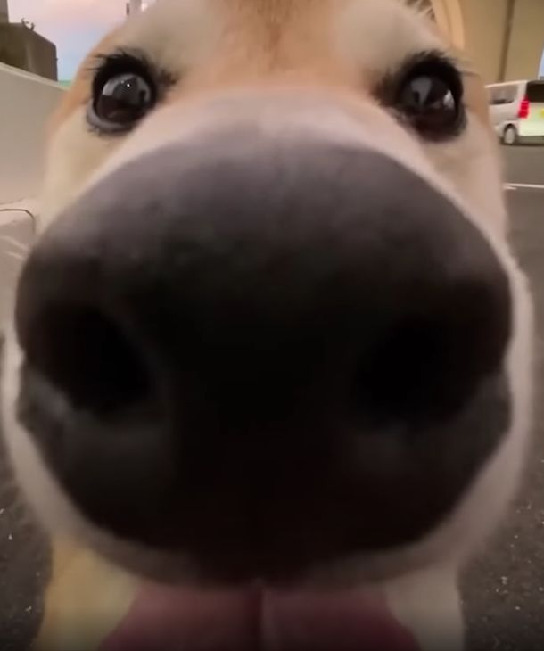

Skąd wzięły się psy
Pochodzenie psów jest związane z procesem zwany domestykacją, który rozpoczął się tysiące lat temu. Początki relacji między ludźmi a psami sięgają epoki paleolitu. Ludzie zauważyli, że pewne dzikie zwierzęta były bardziej przyjazne i skłonne do współpracy. W procesie selekcji naturalnej i sztucznej ludzie zaczęli domestykować psy.
Pierwotnie psy pełniły funkcje praktyczne, takie jak pomoc w polowaniach, ochrona przed drapieżnikami czy pilnowanie miejsca zamieszkania. Z biegiem czasu zaczęły również spełniać role towarzyszy ludzi.
Domestykacja polegała na wybieraniu i hodowaniu zwierząt o określonych cechach, takich jak przyjazne zachowanie, posłuszeństwo czy umiejętności przydatne dla ludzi. W rezultacie dzisiejsze psy to efekt długotrwałej ewolucji i współistnienia z ludźmi.
Dzisiejsze psy różnią się od siebie pod względem rasy, rozmiaru, kształtu i charakteru, co jest wynikiem selekcji dokonywanej przez ludzi w celu uzyskania psów o różnych cechach i umiejętnościach.
